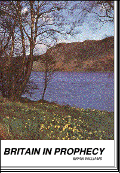
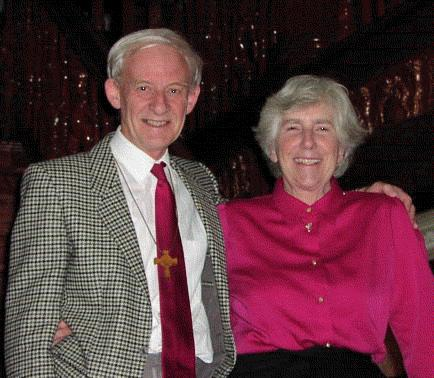

Brian David Williams
All the days of my life
The last day of July 2019 was my 84th birthday. All my life I have been a diarist, penning some 3–4 million words so far (sorry!). After “retiring” from the ministry in March 2001 I decided to type out the complete Diary of my school years; later I began adding a few entries from each of the years before and since. This is what is on the web so far, plus the contents of some of my previously published books:
1935–1946Growing up in Birmingham |

1947–1953Diary of a Birmingham schoolboy |
1954–presentMy life and work |

PublicationsBooks, tapes and correspondence |
The whole diary is backed up with an archive of family photographs, school reports, form lists, timetables, newspaper cuttings, picture postcards, maps etc.* You may find it funny, painful, sad, occasionally poignant, mostly banal, but, I hope, always interesting — a picture of a world long since passed. I trust you will enjoy it.
I am thankful to the many people who have contacted me to comment on the diary and share their own memories and experiences, or who have simply requested further information on all sorts of subjects. Do please get in touch if you would like to; I would be most pleased to hear from you.
I am immensely grateful to my dear friend Jim Nagel (Abbey Press Glastonbury) for his expertise in getting these diaries on the web — it was his idea in the first place, and he didn’t know what he was letting himself in for! Also I thank David Chapman (for rescuing me when I crashed and recovering hundreds of files), and a host of others, especially Charlotte Tucker, Alphaeus Barrett, Patricia A. Taylor and Angela Skitt of Birmingham Central Library, and Tabitha May and Maggie Harris of the Somerset library service, Taunton.
*Not all of the illustrations are yet on the web, but if you would like to have them, I can send you all 864 of them, including many photographs of the city, on a CD (four first-class stamps to cover postage would be a great help).
Please do contact me by post, phone or email:16d-web@brianwilliams.org.uk (This email address will change periodically to thwart junkmail.) And here you are, this is a spamtrap:
|  | Brian D. Williams Summerlands 38 Hill Head Glastonbury, Somerset England BA6 8AR telephone (01458) 83 2843 international +44 1458 83 2843 The picture of Freda and me was taken in 2000 at the sumptuous home of our dear friends Arthur and Cindy Hawkins in Bloomfield Hills, Michigan, while we were ministering in the USA. The 82-room mansion features prominently in the last half-hour of the comedy-crime film Out of Sight with George Clooney and Jennifer Lopez (1998), when special effects show it burning down! |